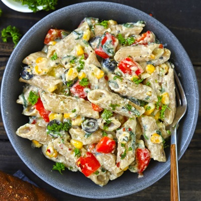

White Sauce Pasta with Loaded Veggies
Ingredients
- 200g pasta (penne or fusilli)
- 1 cup mixed veggies (broccoli, bell peppers, carrots, corn)
- 2 tbsp butter
- 2 tbsp all-purpose flour
- 2 cups milk
- 1/2 cup grated cheese (cheddar or mozzarella)
- 2 cloves garlic, minced
- Salt and pepper to taste
- 1 tsp oregano
- 1 tsp chili flakes (optional)
Instructions
- Cook the pasta in boiling salted water until al dente. Drain and set aside.
- In a pan, sauté the mixed veggies in a little butter until tender. Set aside.
- In the same pan, melt butter and add minced garlic. Sauté for a minute.
- Add flour and cook for 2 minutes, stirring continuously.
- Gradually add milk, whisking to avoid lumps. Cook until the sauce thickens.
- Add grated cheese, salt, pepper, oregano, and chili flakes. Mix well.
- Add the cooked pasta and veggies to the sauce. Toss to coat evenly.
- Serve hot, garnished with extra cheese and herbs.